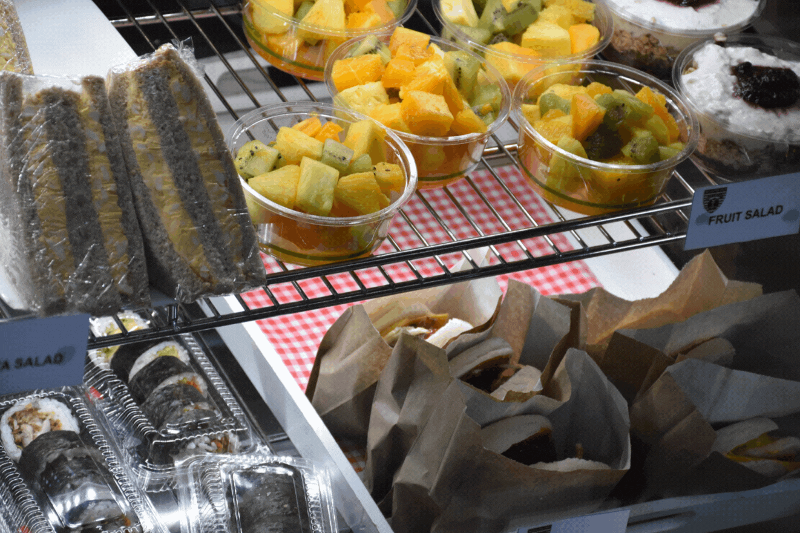

About the Cafe
The Wellington East Girl's College Cafe is a place for the students and staff of Wellington East Girls' College to purchase a variety of foods and drinks. It is located on the ground floor of the main building by the entrance fo the school. It has a range of differnet items avaliable to purchase including differnet hot foods, cold foods, baking, cold drinks, hot drinks and ice blocks.
The WEGC Cafe is run in partnership with Kāpura. Kāpura is a fast growing hospitility company in New Zealand who suplies to over 7,000 low decile schools all across Wellington Region.
This website allows students and staff to look at the avaliable items that can be purchased and the information about each of the items.
Open Hours
Monday: 8:00am to 2:30pm
Tuesday: 8:00am to 2:30pm
Wednesday: 8:00am to 1:30pm
Thursday: 8:00am to 2:30pm
Friday: 8:00am to 2:30pm
Closed Monday, Tuesday, Friday from 10:40 to 11:15 during AKO
